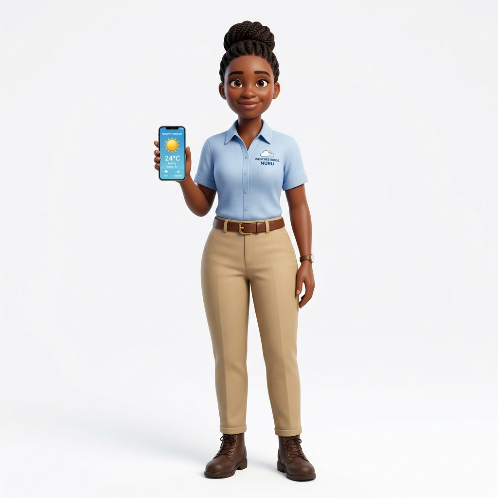
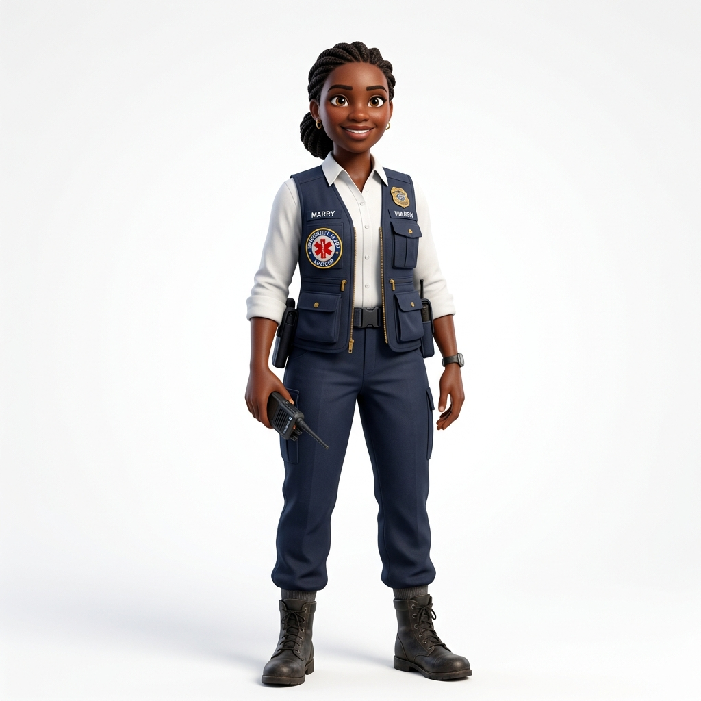

but they often lack timely, trusted, local-language guidance through a channel they can actually access and use.
General support, weather guidance, crop advice, financial support, and emergency alerts for every farmer.
Get answers, solve issues, and stay on track.
Repayment reminders, loan guidance, and financial advice.
Practical guidance for healthier crops and better yields.
Real-time forecasts and alerts to help you plan ahead.
Fast warnings and urgent guidance when farmers need it most.
Aggregating insights and escalating critical field issues.
General Support
Loan Advisor
Crop-Coach

Weather Guide

Alert Advisor
Manager
24/7 support in kinyarwanda
Get help in real time.
Never miss important updates.
We will have good conditions this week to plant maize.
Heavy rains tonight, protect new plants and avoid fertilizer application before the storm.
Cloudy with bit of sunshine until 2pm, after that sunny. Temp: 28C
What to apply, at what stage of the grow cycle, for better results.
Keep spacing consistent for stronger crop growth.
Yellow leaves in maize? Let's identify the cause.
Real-time pulse on farmer satisfaction and feedback.
"47 farmers show signs of delayed fertilizer adoption. Prioritize Village 3 this week."
Early warnings for weather or pest risks based on aggregate farmer data.
the evolution of the characters and their capabilities (josef and marry) + a dream that answer their issues above and byond, give a brad context and more holistic solution
Repayment reminders and loan guidance.
Basic financial planning.
It may help to set aside a small amount after each market sale. This can make repayment easier when the due date comes. I can also remind you before your next repayment date.
Flood, drought, or disease outbreak information sent directly to farmers.
Clear safety instructions and advising farmers on their immediate next steps during crises.
Helping managers instantly identify and escalate urgent farmer reports.
Gentle reminders to keep farmers on track based on their individual participation.
Natural, ongoing voice conversations and check-ins to maintain a strong relationship.
Continuously understanding what the farmer needs next through proactive dialogue.
Suggesting other OAF products or services precisely tailored to the farmer's history.
Gathering direct farmer satisfaction and service feedback to improve operations.
"Your maize is at vegetative stage and rain is expected. Fertilizer application should be effective this week."
"Reports from nearby farms suggest increasing armyworm pressure. Inspect your field this week."
"Based on your planting date and rainfall patterns, your second fertilizer application window begins next week."
Predicting harvest outcomes based on current health, inputs, and historical data.
Helping the farmer design their crop rotation and strategy for the upcoming year.
"Based on recent rainfall and temperature, there is increased risk of fall armyworm activity in your area. Inspect maize fields this week."
"Based on expected rainfall patterns in your district, the optimal planting window is between 12 and 18 March."
"Rainfall patterns in your area have changed over the last three seasons. Consider earlier planting and drought-tolerant seed varieties."